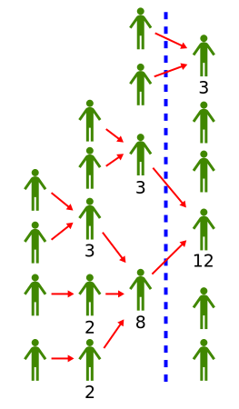

Liquid Democracy

We as humans need efficient ways to find good decisions - if we want to not kill our planet and ourselves. Liquid Democracy means to me, that every Human has the ability to actually partake in the decisions that concern him. Especially, he should have more clout in the decision, the more it affects him. To have a chance to make this scale, a system like that needs the ability to delegate some decisions But the crucial thing that our technology allows us to do today is to delay that decisions to when we want to take it - instead of just every few years. This especially means you can change your decision to delegate and even take it back to decide yourself at any time.
I believe the this is an evolution of the democratic idea and an important tool if we humans want to solve all our conflicts peacefully at some point.
For a long time I thought that inside the pirate party together with the Liquid Democracy association would be the best place to develop the ideas of Liquid Democracy and get them used. I believe this to have failed.
Sadly this means that I have no clue how to get these ideas into a usable state. Still, here I am collecting my thoughts and experiences on the topic.